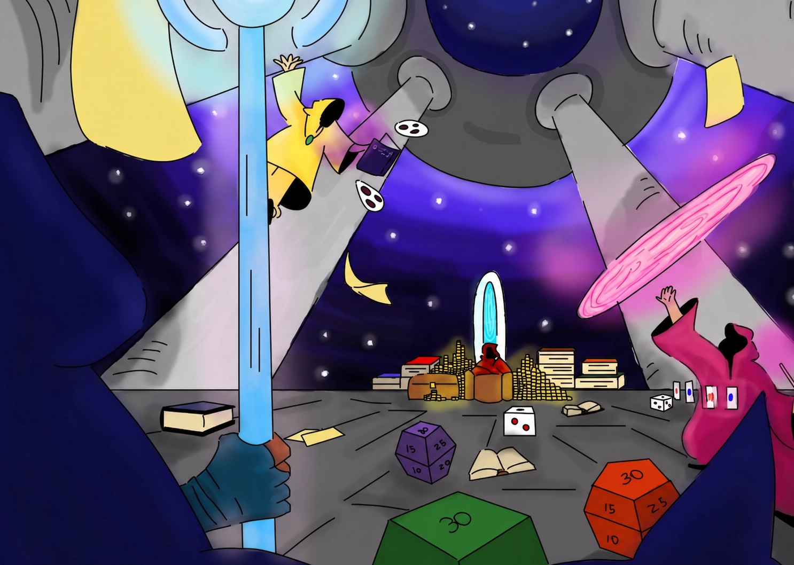
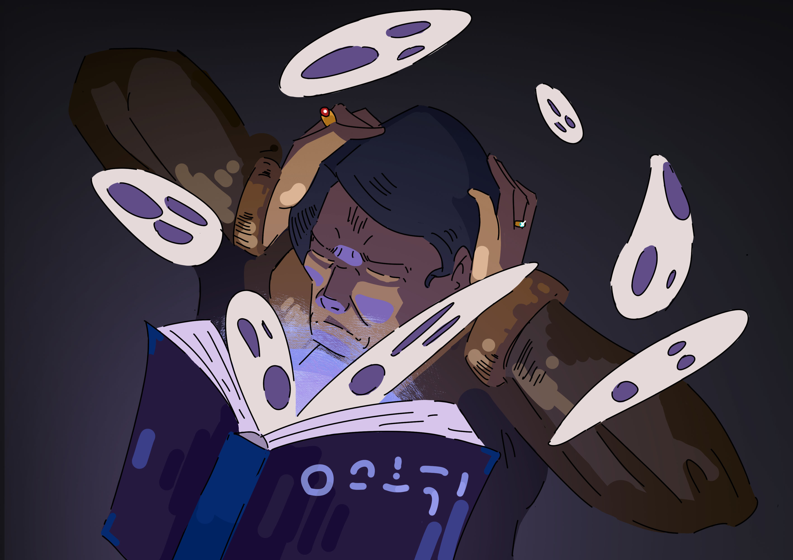

Masters of Patterns
14 JUN 2026

Masters of Patterns is a strategy, movement, and learning game.
Each player takes on the role of an apprentice mage on a journey through the Temple of Patterns, seeking to recover an arcane compendium of knowledge about the Gang of Four (GoF) design patterns.
The board consists of mystical libraries (divided into Creational, Structural, and Behavioral patterns), corridors, and intellectual combat areas, where players use knowledge points to duel.
Uma versão online está atualmente em desenvolvimento, e mais atualizações virão em breve.
Note: This is a tabletop game designed for 2 to 6 players, focused on teaching software engineering.